服务：响应、搬运与精度
实际输入：迟到的首次响应、量化误差、恢复达标方案、下一合同的搬运限制与实际保存。具体参数只用于开发验证，不进入游戏提示。Viewport事件，不代表原生输入、前置旅程或真人理解验收。
修复前英文工具栏撑宽页面 · before-en-wide-toolbar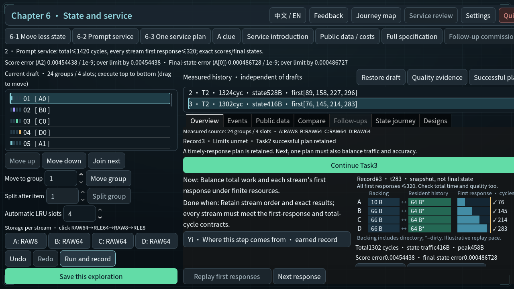
修复前 · before-zh_CN-service-late-first-response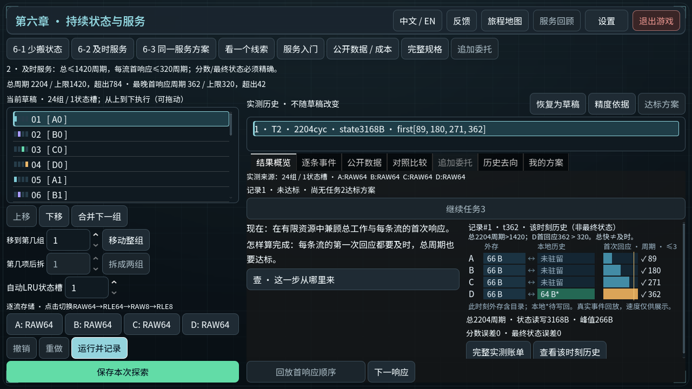
修复前 · before-zh_CN-service-precision-unmet修复前 · before-zh_CN-service-raw8-explanation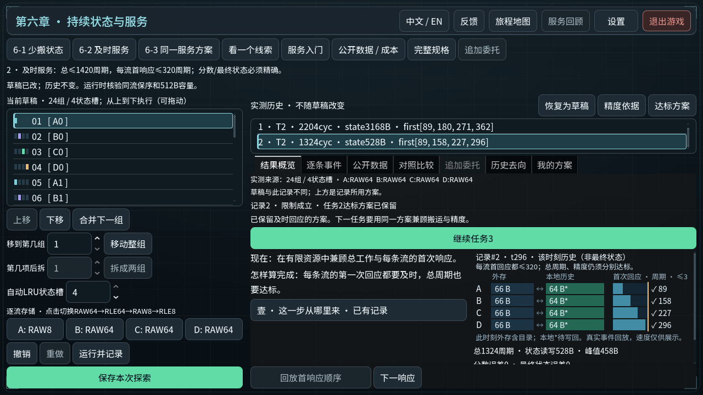
最终实际输入 · en-service-entry 最终实际输入 · en-service-late-first-response
最终实际输入 · en-service-late-first-response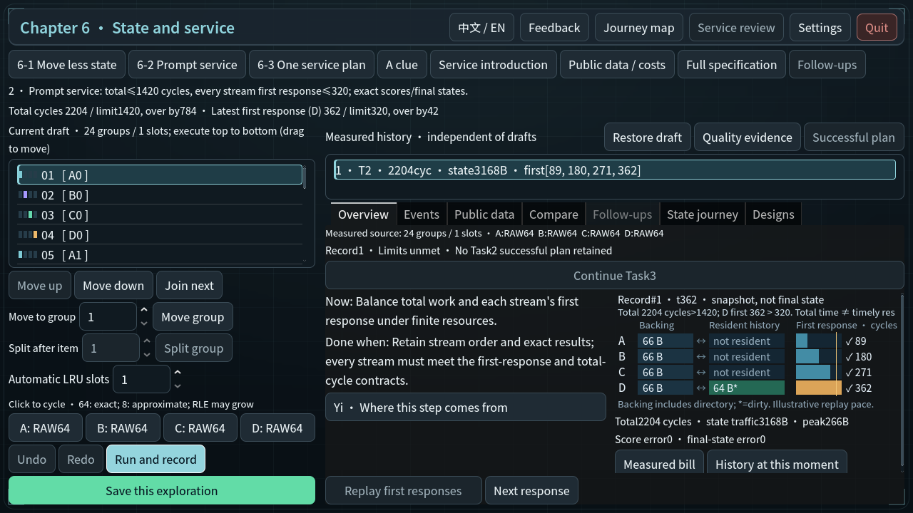
最终实际输入 · en-service-mixed-plan-met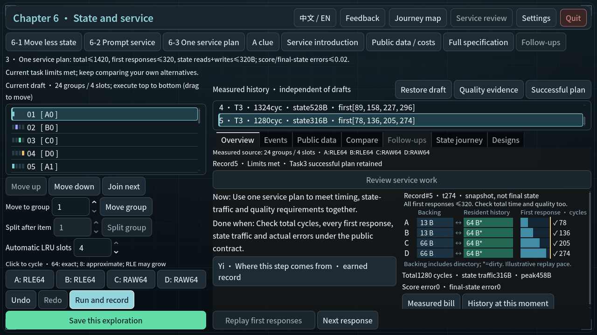
最终实际输入 · en-service-next-contract-traffic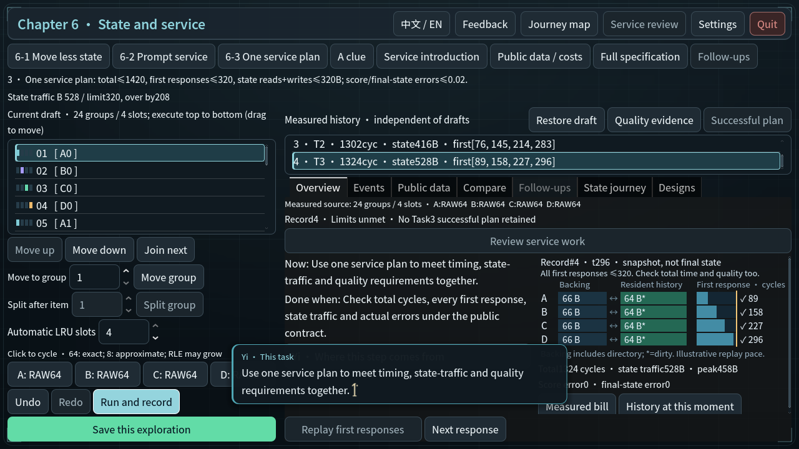
最终实际输入 · en-service-precision-unmet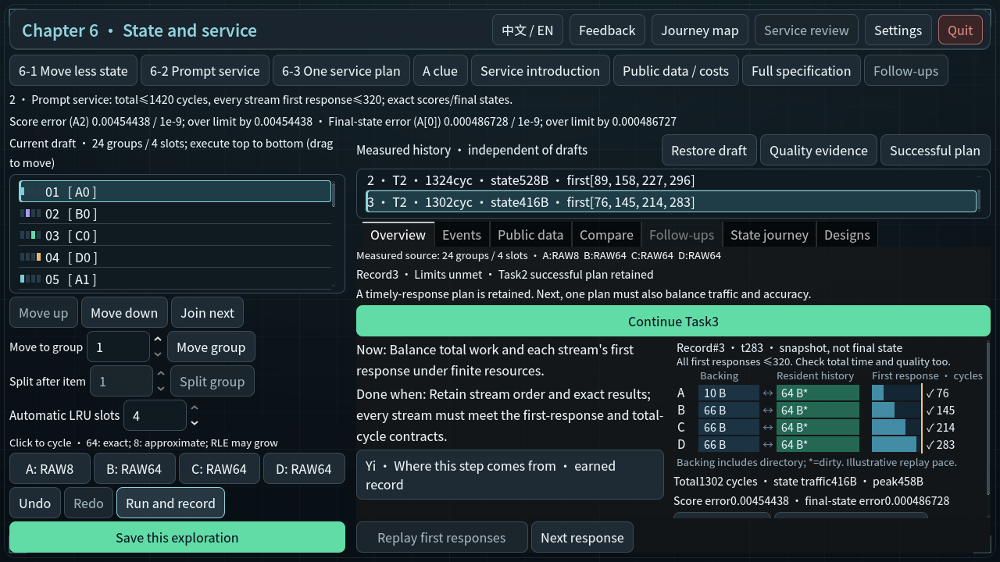
最终实际输入 · en-service-raw8-explanation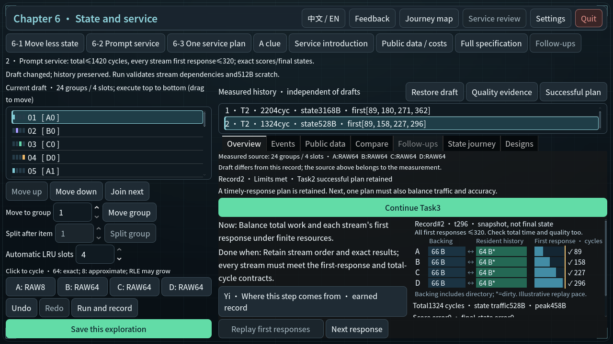
最终实际输入 · en-service-saved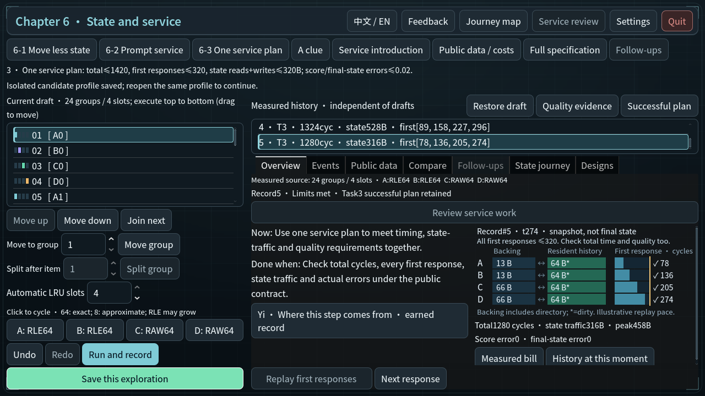
最终实际输入 · en-service-timely-exact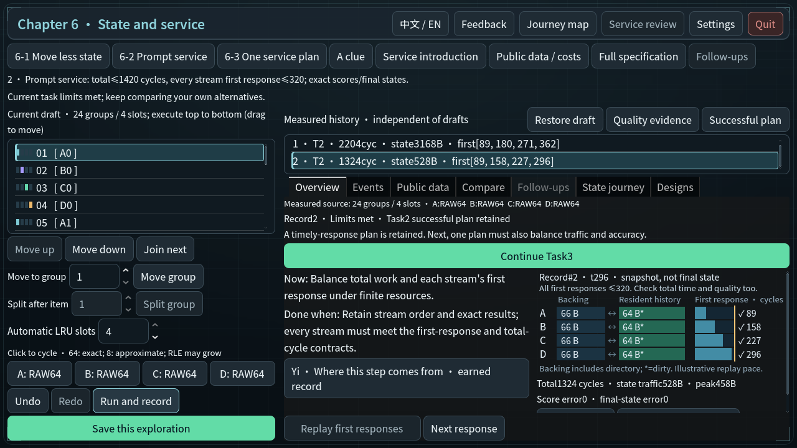
最终实际输入 · zh_CN-service-entry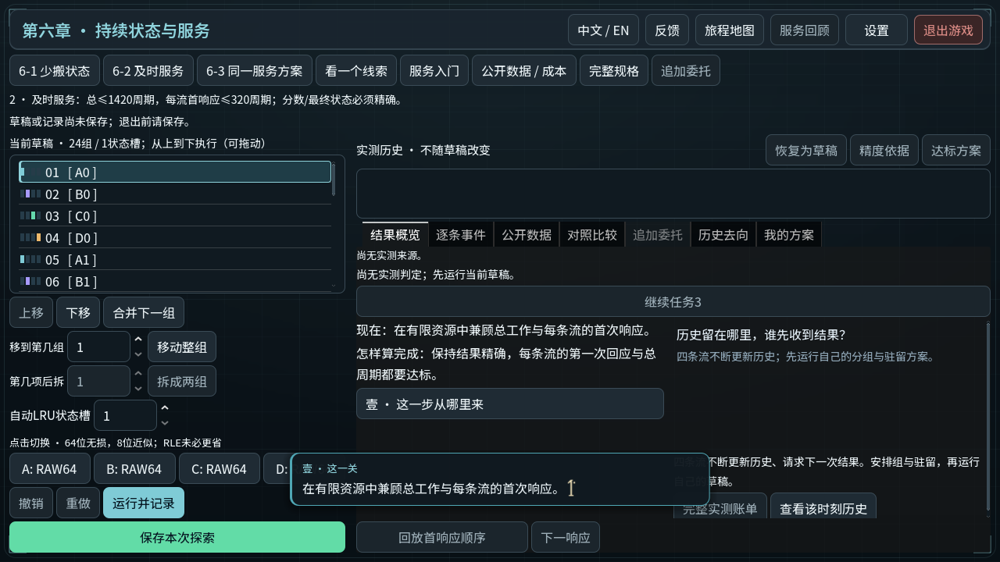
最终实际输入 · zh_CN-service-late-first-response最终实际输入 · zh_CN-service-mixed-plan-met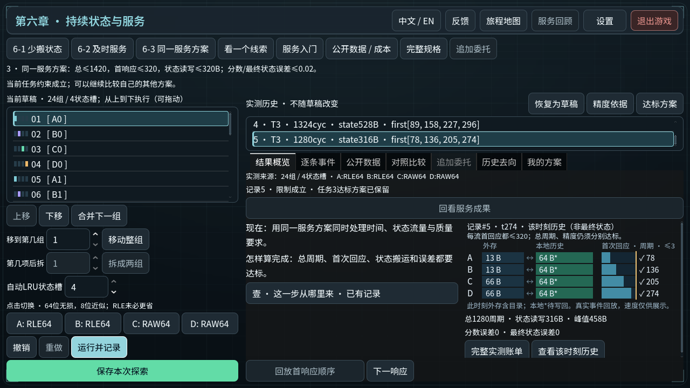
最终实际输入 · zh_CN-service-next-contract-traffic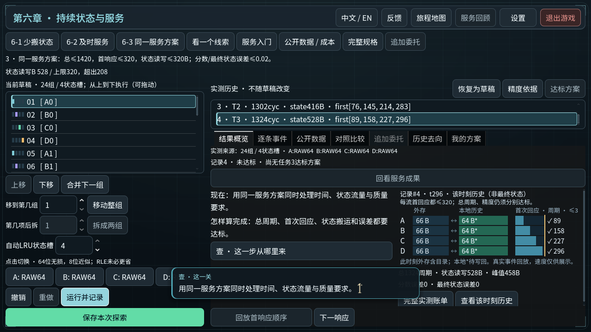
最终实际输入 · zh_CN-service-precision-unmet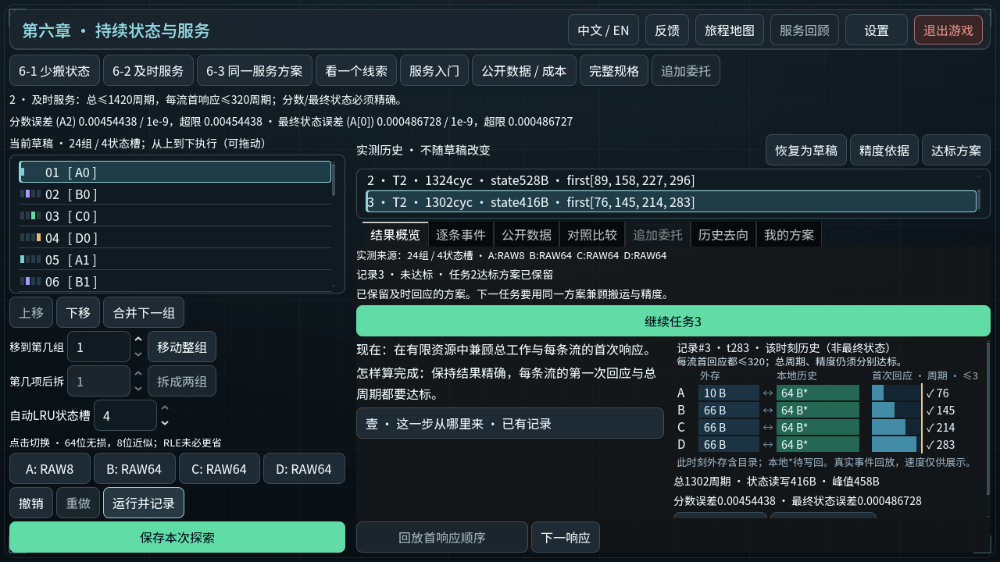
最终实际输入 · zh_CN-service-raw8-explanation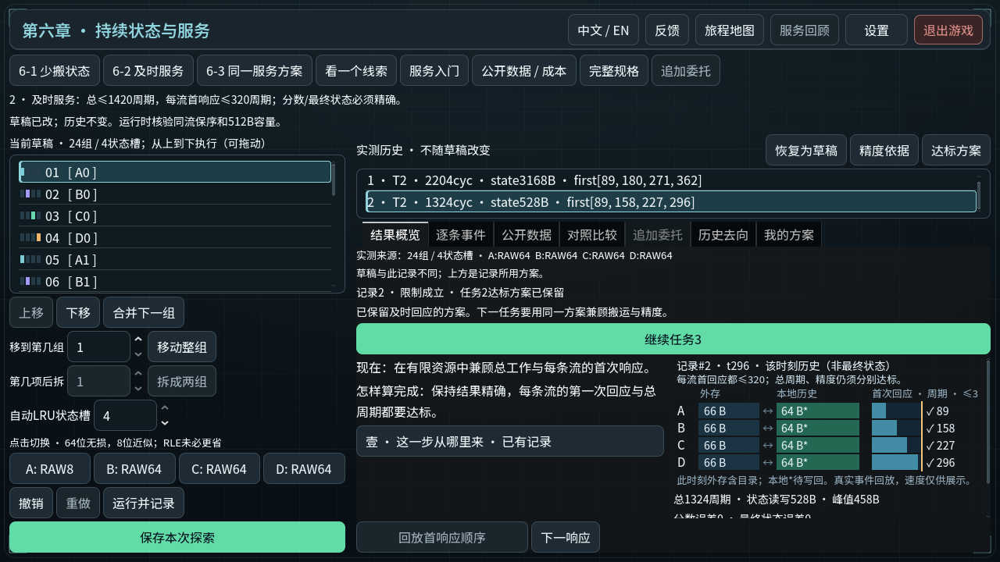
最终实际输入 · zh_CN-service-saved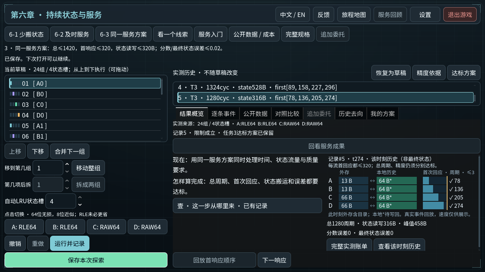
最终实际输入 · zh_CN-service-timely-exact